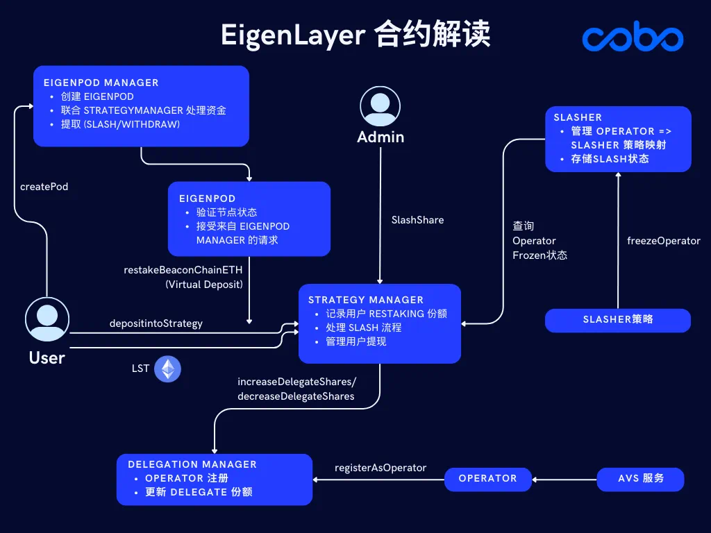
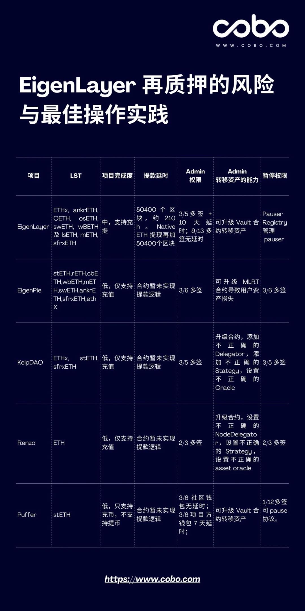

EigenLayer 再质押详解与风险评估
EigenLayer 再质押详解与风险评估
目录
什么是 EigenLayer
EigenLayer 是一个基于以太坊的去中心化再质押协议，允许用户在现有的以太坊质押基础上，重新质押其 ETH 或其他资产，以支持多种去中心化服务，如去中心化金融（DeFi）、去中心化自治组织（DAO）等。通过再质押，用户可以最大化其质押资产的收益，同时为生态系统提供额外的安全性和功能性。
EigenLayer 的再质押类型
EigenLayer 目前支持两种主要的再质押类型，每种类型都有其独特的特点和风险。
Native ETH 再质押
Native ETH 再质押 是指用户将其 ETH 质押在以太坊信标链（ETH Beacon Chain）中。资金仍然存放在 ETH Beacon Chain，享有以太坊网络提供的安全保障。
特点
- 高安全性：资金存放在以太坊信标链，依赖以太坊的安全机制。
- 低合约风险：由于资金未直接存放在 EigenLayer 的合约中，减少了合约漏洞带来的风险。
- 流动性限制：质押期间资金的流动性较低，可能影响用户的资金调度。
LST 再质押

LST 再质押 是指用户的资金直接存放在 EigenLayer 的智能合约中。这种方式允许更灵活的资金使用，但同时带来了更高的合约风险。
特点
- 高灵活性：资金直接存放在 EigenLayer 合约中，可以更方便地参与多种服务。
- 合约风险：智能合约可能存在漏洞或被攻击，增加资金损失的风险。
- 潜在高收益：由于灵活性较高，可能获得更高的收益。
风险评估
| 再质押类型 | 安全性 | 灵活性 | 潜在收益 | 风险类型 |
|---|---|---|---|---|
| Native ETH 再质押 | 高 | 低 | 中等 | 流动性限制 |
| LST 再质押 | 中 | 高 | 高 | 合约风险、Rug Pull |
中心化风险与 Rug Pull 风险
在当前的再质押市场中，包括 EigenLayer 在内的主流质押协议普遍存在中心化风险。项目方具备较大的控制权，可能存在Rug Pull（跑路）的风险，即项目方在未通知用户的情况下撤走资金，导致用户资产损失。
中心化风险表现
- 控制权集中：少数团队成员或地址拥有项目的控制权。
- 透明度不足：项目的代码审计、运营透明度不高，增加不确定性。
- 治理机制薄弱：缺乏有效的治理机制，难以防范恶意行为。
Rug Pull 风险案例
| 项目名称 | 描述 | 发生风险类型 |
|---|---|---|
| 项目 A | 高收益承诺，团队撤资后消失 | Rug Pull |
| 项目 B | 智能合约漏洞被利用，资金被盗取 | 合约风险 |
| EigenLayer | 当前尚未发生，但需警惕潜在风险 | 潜在 Rug Pull |
资金规模与投资建议
根据资金规模的不同，投资者在选择再质押项目时应有不同的策略。以下是针对不同资金规模的投资建议。
大资金投资建议
对于拥有较大资金的投资者，建议优先考虑EigenLayer，原因如下：
- 项目成熟度：EigenLayer 相较于其他再质押项目，完成度较高，且已实现提款逻辑，降低了退出风险。
- 安全性：采用 Native ETH 再质押模式，资金存放在 ETH Beacon Chain，安全性更有保障。
- 市场认可度：EigenLayer 在市场上的认可度和声量较高，TVL（总锁定价值）相对稳定。
小资金投资建议
对于资金规模较小的投资者，建议关注Puffer等新兴项目，但需谨慎：
- 声量与社区支持：Puffer 当前声量较大，可能在短期内获得更多的市场关注和 TVL 增长。
- 风险控制：由于小资金相对容易分散，投资者可以在多个项目中进行尝试，但需密切关注项目的进展和安全性。
- 等待观望：对于尚未完全成熟的项目，建议等待项目稳定后再进行投资，以降低风险。
市场趋势与风险评估
近期，区块链市场出现了再质押井喷和比特币第二层解决方案（BTC L2）的快速发展，但这些新兴领域同样伴随着较高的合约风险。
再质押井喷
- 增长驱动力：DeFi 的快速发展和用户对高收益的追求推动了再质押市场的繁荣。
- 风险因素：新项目大量涌现，部分项目未经充分审计，存在智能合约漏洞和 Rug Pull 风险。
BTC L2 发展
- 技术优势：比特币 L2 方案（如闪电网络）提高了比特币的交易速度和可扩展性。
- 安全挑战：L2 协议的复杂性增加了合约风险，且部分项目尚处于实验阶段，存在不确定性。
风险评估表
| 市场趋势 | 机会 | 风险 |
|---|---|---|
| 再质押井喷 | 高收益机会，多样化的质押服务 | 合约漏洞、Rug Pull、项目不成熟 |
| BTC L2 发展 | 提升比特币交易效率，扩大应用场景 | 智能合约复杂性高，安全性有待验证 |

总结
EigenLayer 作为当前市场上领先的再质押协议，提供了两种再质押类型，分别满足不同投资者的需求。然而，无论选择哪种再质押方式，中心化风险和合约风险始终是不可忽视的因素。对于大资金投资者，EigenLayer 凭借其成熟度和安全性，成为更为稳妥的选择；而小资金投资者则需谨慎选择，关注项目的实际进展和安全性。
同时，随着再质押和 BTC L2 等新兴领域的快速发展，投资者应保持警惕，深入了解项目的技术细节和风险点，合理分散投资，确保资产安全。在享受区块链带来的高收益同时，切勿忽视潜在的安全威胁和市场风险。
本文所述内容仅供参考，投资需谨慎，请根据自身情况和风险承受能力做出决策。